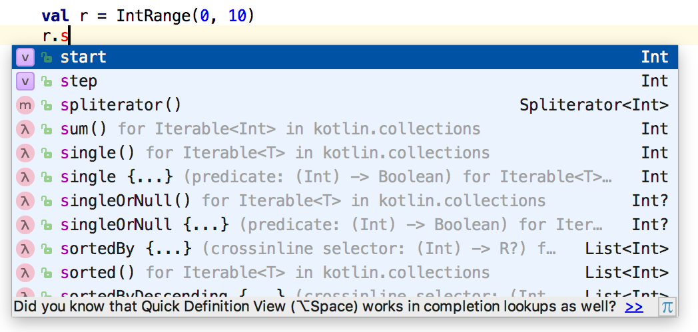

Objects store data using properties (
vals andvars) and perform operations with this data using functions.
A function intended only to work with a specific type of object is called a member function. A class defines properties and member functions for what is essentially a new data type. Properties and member functions together are called members of the corresponding class. Making a val or var of a class is called creating an object (the phrase creating an instance is also used). We even refer to instances of built-in types like Double or Boolean as objects.
Consider Kotlin’s IntRange class:
// ObjectsEverywhere/IntRanges.kt
fun main(args: Array<String>) {
val r1 = IntRange(0, 10)
val r2 = IntRange(5, 7)
println(r1)
println(r2)
}
/* Output:
0..10
5..7
*/Each object has its own piece of storage in memory. For example, IntRange is a class, but a particular range r1 from 0 to 10 is an object. It’s distinct from another range r2 from 5 to 7. So we have a single IntRange class, and this example creates two objects (instances) of that class.
Classes can have many operations (member functions). It’s easy to explore classes using an IDE (integrated development environment) that includes a feature called code completion. The accompanying course gives you specific guidelines about using code completion with IntelliJ Idea so you can see all the members of an object:

You can see that many operations are available for an IntRange object; some are simple and obvious, like sum(), and others require more understanding before you can use them. If you try calling one that needs arguments, the IDE will ask for those arguments.
To know enough to call a member function, look it up in the Kotlin documentation, available online. Notice the magnifying glass icon in the top right area of the page. Click on that and type IntRange into the search box. Click on kotlin.ranges > IntRange from the resulting search. You’ll see the documentation for the IntRange class. You can study all the member functions—the API (Application Programming Interface)—of the class. Although you won’t understand most of it at this time, it’s helpful to become comfortable looking things up in the Kotlin documentation.
An IntRange is a kind of object, and a defining characteristic of objects is that you perform operations on them. Instead of “performing an operation,” we say calling a member function. To call a member function for an object, start with the object identifier, then a dot, then the name of the operation:
// ObjectsEverywhere/RangeSum.kt
fun main(args: Array<String>) {
val r = IntRange(0, 10)
println(r.sum())
}
/* Output:
55
*/Since sum() is a member function defined for IntRange, you call it by saying r.sum(), which adds up all the numbers in that IntRange.
Earlier object-oriented languages used the phrase “sending a message” to describe calling a member function for an object. You can sometimes still see that terminology.
You can examine the member functions available for basic types like String or Int by using the IDE’s completion feature with the corresponding identifier. Type the identifier, then a ., and the IDE will show you a list of possible member functions. For example, you can reverse a string or convert all the characters to lower case:
// ObjectsEverywhere/Strings.kt
fun main(args: Array<String>) {
val s = "AbcD"
println(s.reversed())
println(s.toLowerCase())
}
/* Output:
DcbA
abcd
*/You can easily convert a string to an integer and back:
// ObjectsEverywhere/Conversion.kt
fun main(args: Array<String>) {
val s = "123"
println(s.toInt())
val i = 123
println(i.toString())
}
/* Output:
123
123
*/Later in the book we’ll discuss strategies to handle situations when the string you want to convert doesn’t represent a correct integer value.
You can also convert from one numerical type to another. In Kotlin, all conversions between number types are explicit, to avoid confusion. For example, you convert an Int expression i to a Long by calling i.toLong(), or to a Double using toDouble():
// ObjectsEverywhere/NumberConversions.kt
fun fraction(numerator: Long, denom: Long) =
numerator.toDouble() / denom
fun main(args: Array<String>) {
val num = 1
val den = 2
val f = fraction(num.toLong(), den.toLong())
println(f)
}
/* Output:
0.5
*/For now, it’s enough to know what an object is and how to use it. Next, you’ll learn to define your own classes.
©2018 Mindview LLC. All Rights Reserved.